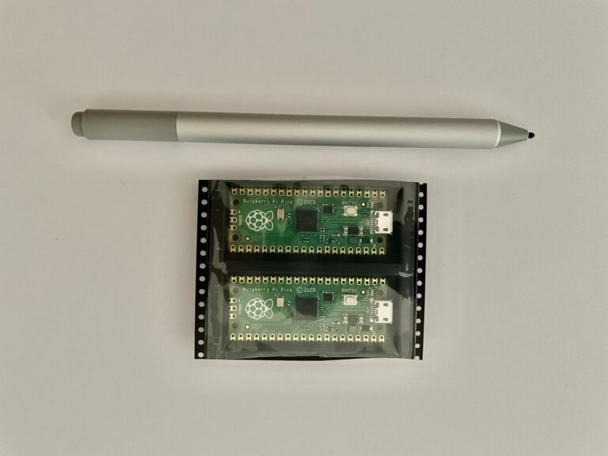

Wer mich bisschen länger kennt weiß, ich mag Raspberry Pis, ich besitze etliche davon und meistens liegen sie in einer Kiste – ausser ich versuch mich mal wieder in einem Wochendendprojekt.
Auch wenn für mich der neue Raspberry Pi Pico nicht wirklich ein Pi ist – da er ein MC ist, kein OS hat und auch sonst nicht mit Pi Zubehör kompatibel ist – konnte ich für netto 3 Euro einfach nicht nein sagen.

Was ich damit anstelle muss ich erstmal rausfinden. Da, wie schon erwähnt, der Pico ein Microcontroller ist, ist er nicht für das Hosting von Seiten, dem Rendern von Video und Co. verwendbar.
Muss er auch nicht! Er wird für mich wohl den Platz einnehmen wo ich jetzt einen Raspberry Pi Z im Einsatz habe. Sprich Raumklimaüberwachung (GitHub Repository), Helligkeitssensor, etc. pp.
Was ich damit genau anstelle weiß ich also noch nicht, was ich weiß: Es wird in diesem Blog ein Post dazu geben.
#happymaking.
Back